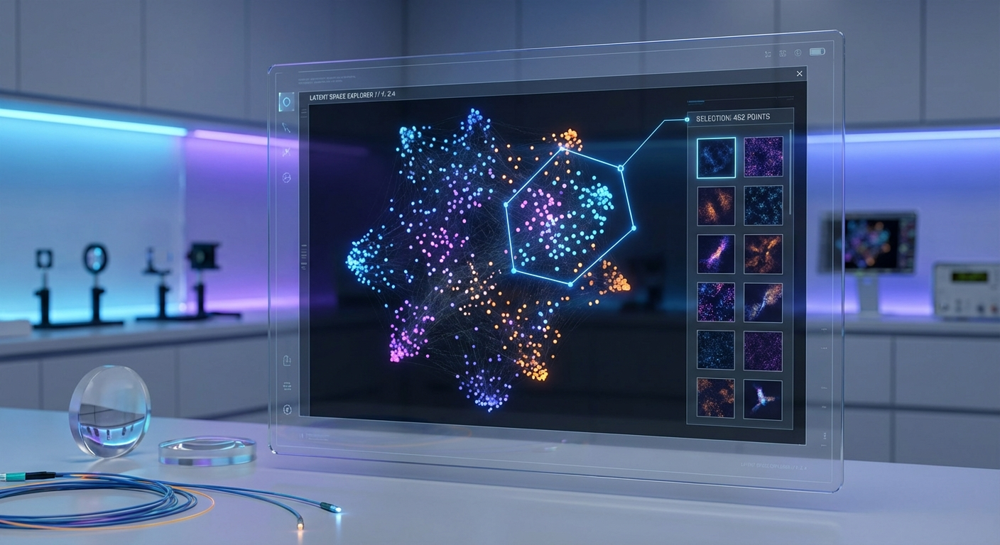
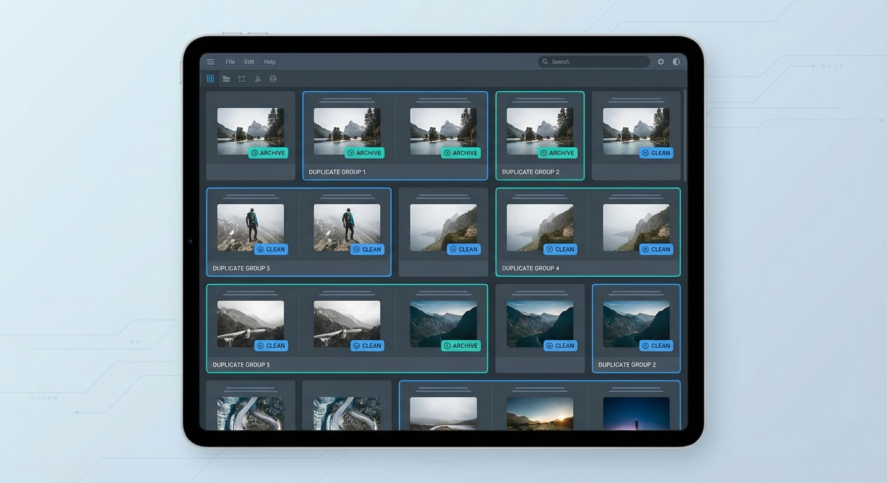

Pixel Detective Platform
A local-first AI media search engine that brings semantic discovery, clustering, and curation to large personal archives. Built as a microservices platform with GPU acceleration.

System Architecture
The platform is decoupled into a Next.js frontend, ingestion orchestration, ML inference, a vector database, and a GPU-accelerated UMAP service.
Frontend
Next.js 15, Chakra UI, React Query, Zustand, hydration-safe components.
Backend Services
Ingestion, ML inference, and GPU UMAP services coordinated via FastAPI.
Vector Intelligence
Qdrant stores embeddings and metadata for hybrid semantic search.
Performance
Dynamic batch sizing, FP16 models, and CUDA acceleration for throughput.
Core systems
Search Pipeline
Text and image queries embed via CLIP, then rank results in Qdrant.
Latent Space Explorer
UMAP projections, clustering, lasso selection, and multi-layer visualization.
Curation & Duplicates
Near-duplicate detection, archival workflows, and collection merging.
Streaming UMAP
Chunked processing with progress tracking for 10k+ images.
Feature visuals

Latent Space Explorer
Interactive scatter plots, clustering controls, and selection pipelines.

Curation Suite
Duplicate analysis, archive safeguards, and collection-level actions.